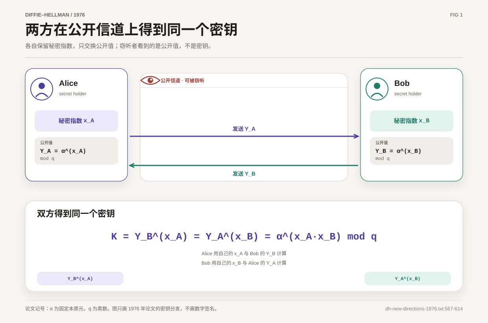
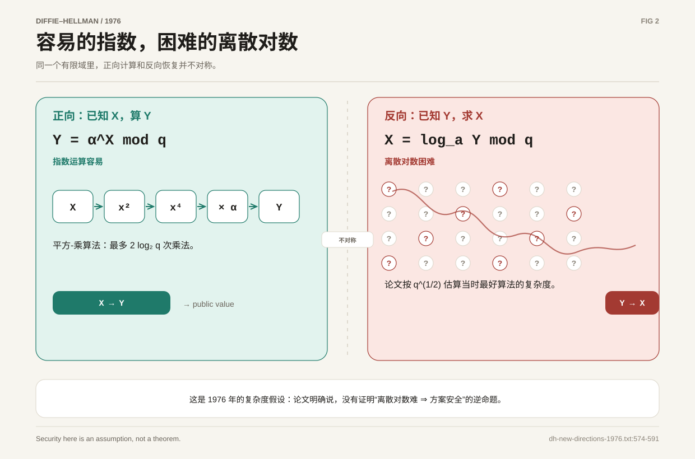
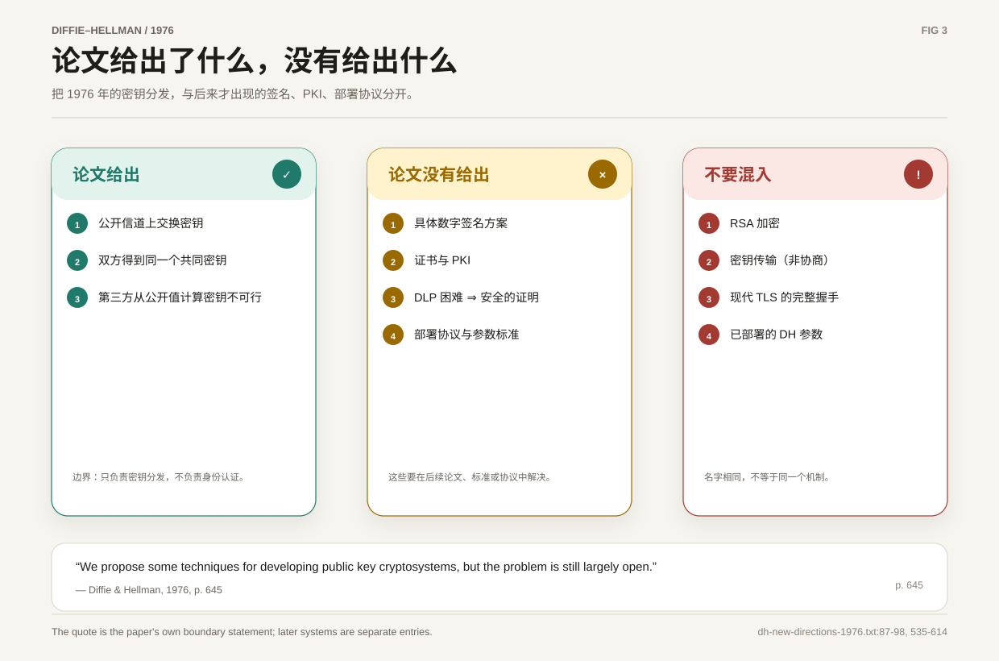

原理与机制
算法：Diffie-Hellman 密钥协商（Diffie-Hellman Key Agreement）。论文提出的是 public key distribution，而不是把密钥封装后由一方传给另一方。它写：「Public key distribution systems offer a different approach to eliminating the need for a secure key distribution channel.」在这个系统里，「two users who wish to exchange a key communicate back and forth until they arrive at a key in common」，而「A third party eavesdropping on this exchange must find it computationally infeasible to compute the key from the information overheard」。机制基础是有限域上的离散对数：「The new technique makes use of the apparent difficulty of computing logarithms over a finite field GF(q) with a prime number q of elements.」

为什么重要
这样设计是为了避免事先依赖一条安全密钥分发通道。论文把 public key distribution 描述为「a different approach to eliminating the need for a secure key distribution channel」，两人无需先共享秘密，只要来回发送公开值就能得到共同密钥。它的安全性不是信息论意义上的完美保密，而是计算假设：「The security of our technique depends crucially on the difficulty of computing logarithms mod q」；论文还把 q^(1/2) 当作「a good measure of the problem's complexity」，这是 1976 年的估计。

应用与实例
流程是：每个用户独立生成一个随机秘密指数，保留秘密，把对应的公开值放进公开文件。论文写：「Each user generates an independent random number」；「Each keeps Xi secret, but places」；公开值「in a public file with his name and address」。随后两人各自用自己的秘密指数与对方的公开值计算同一个密钥。正文只描述这一密钥协商步骤，不把它写成数字签名、证书签发或完整的部署协议；公开文件如何被可信地维护，也不是本文给出的 PKI 方案。
边界与攻击面
论文把安全建立在离散对数困难上，并明确这是假设：「The security of our technique depends crucially on the difficulty of computing logarithms mod q」；如果对数容易算，「the system can be broken」。作者还写：「we do not currently have a proof of the converse」，即没有证明“离散对数难 ⇒ 系统安全”。所以该条目不能把 1976 年的 q^(1/2) 估计当成现代安全证明；它既没有给出具体攻击，也没有给出归约。被动窃听者从公开值直接算密钥的困难性，仍是这个方案的核心边界。
历史与背景
论文以「New Directions in Cryptography」为题，作者是「WHITFIELD DIFFIE AND MARTIN E.HELLMAN, MEMBER, IEEE」，刊于 IEEE Transactions on Information Theory 22(6)，1976 年 11 月，644–654 页；文首记「Manuscript received June 3,1976.」。它提出 public-key distribution 并讨论 public-key cryptosystems，但作者自己写：「We propose some techniques for developing public key cryptosystems, but the problem is still largely open.」因此该条目把 1976 年论文断为密钥分发的公开提出，不写成已部署协议、已给出数字签名或已被证明安全。

逐步示例与核验
形式模型与复算步骤
[K=g^{ab}\bmod p\quad\text{或}\quad K=[ab]G]
Diffie-Hellman 密钥协商的公开参数、密钥/随机数与消息；变量说明：a,b 私有随机数，g 生成元，p 模数，G 椭圆曲线基点。1.双方各自生成私钥并计算公钥。2.交换公钥。3.用对方公钥与自己的私钥计算共享点。边界：公式只覆盖已登记的参数与假设；参数取值、标准版本和实现细节仍以来源为准。
参考出处
- Wikipedia search entry for Diffie-Hellman 密钥协商. https://zh.wikipedia.org/w/index.php?search=Diffie-Hellman%20%E5%AF%86%E9%92%A5%E5%8D%8F%E5%95%86
- Handbook of Applied Cryptography (Menezes, van Oorschot, Vanstone). https://www.cacr.math.uwaterloo.ca/hac/
- Diffie, Hellman: New Directions in Cryptography. https://ee.stanford.edu/~hellman/publications/24.pdf